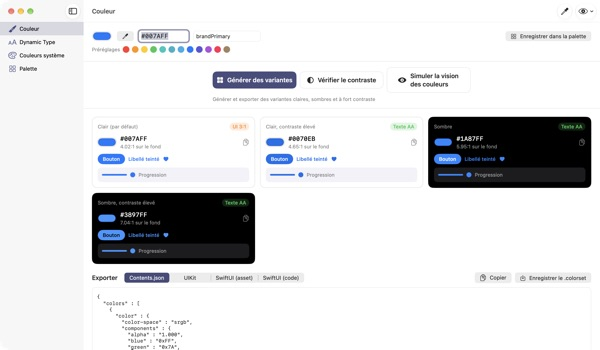
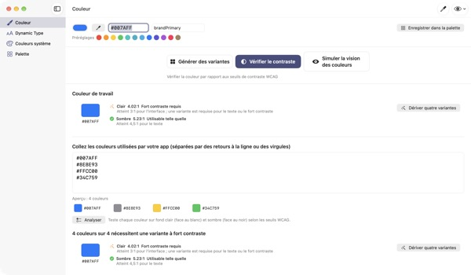
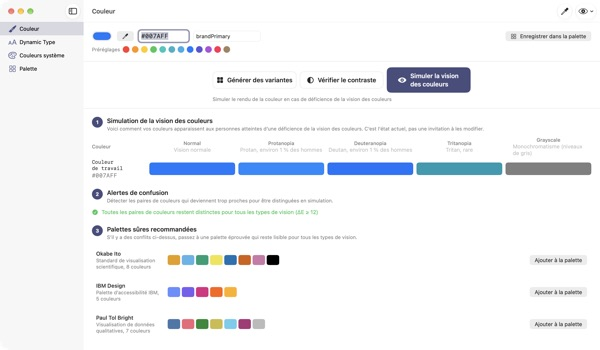
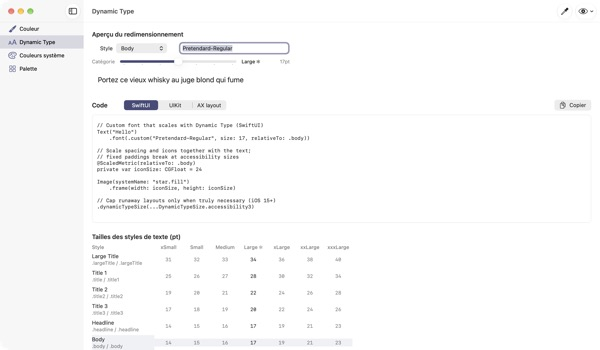

Une couleur en entrée,
quatre apparences en sortie
Les couleurs système s’adaptent seules au mode sombre et à « Augmenter le contraste ». Vos couleurs de marque, non. TetraTint part d’une couleur du mode clair, crée les variantes Clair, Clair contraste élevé, Sombre et Sombre contraste élevé, puis les exporte directement vers Xcode.
Toutes les fonctions sont gratuites. macOS 14 ou ultérieur.

Essayez votre couleur de marque
Collez une valeur hex ou touchez un préréglage. Le même calcul que dans l’app affiche aussitôt les quatre variantes et leur contraste.
Votre couleur de marque s’est-elle déjà noyée en mode sombre ?
Le bleu choisi en mode clair paraît terne sur fond noir, et pour qui active « Augmenter le contraste », le texte devient difficile à lire. Chercher une couleur par apparence et vérifier chaque rapport à la main prend une demi-journée. TetraTint dérive les variantes comme évoluent les couleurs système d’une apparence à l’autre, et indique tout de suite si chacune passe.
Vérifiez d’un coup toutes vos couleurs
Collez toute la liste hex de votre app : chaque couleur est classée comme utilisable telle quelle, fort contraste requis ou décorative uniquement.
Un clic transforme une couleur à problème en quatre variantes enregistrées dans votre palette. Pratique pour préparer la mention d’accessibilité « Contraste suffisant » sur l’App Store.

Voyez avec les yeux d’une personne daltonienne
Visualisez votre palette en protanopie, deutéranopie, tritanopie et niveaux de gris, avec une alerte pour chaque paire qui devient difficile à distinguer.
Chargez d’un clic les palettes adaptées au daltonisme Okabe–Ito, IBM et Paul Tol, ou utilisez le bouton en forme d’œil en haut à droite pour voir toute l’app ainsi.

Vos polices personnalisées suivent la taille du texte
Consultez les 11 styles de texte sur 7 tailles et faites glisser un curseur pour voir les tailles réelles.
Saisissez le nom PostScript de votre police pour obtenir du code UIKit, SwiftUI et @ScaledMetric, ainsi que du code qui change la mise en page en grande taille.

Trois étapes pour commencer
- 1
Ajoutez une couleur de base
Collez un hex, prélevez une couleur n’importe où à l’écran avec la pipette ou choisissez un préréglage.
- 2
Vérifiez les quatre variantes
Lisez les badges de contraste et ajustez celles qui s’écartent de votre marque.
- 3
Exportez vers Xcode
Copiez ou enregistrez en Contents.json, .colorset ou code UIKit et SwiftUI.
Comment naissent les variantes et ce que disent les badges
- Clair (par défaut)
- Votre couleur telle que saisie
- Clair, contraste élevé
- Un peu plus saturée, assombrie jusqu’à 4.5:1 sur blanc
- Sombre
- Un peu plus claire et plus vive (luminosité +5, saturation +3)
- Sombre, contraste élevé
- Éclaircie jusqu’à 7:1 sur noir
- Texte AA
- 4.5:1 ou plus avec le fond, convient au texte courant
- UI 3:1
- 3:1 ou plus, convient aux boutons et icônes, pas au texte
- Faible
- Moins de 3:1, à éviter pour le texte, les icônes et les états
- Export
- Contents.json · .colorset · UIKit · SwiftUI, ou toute la palette en un seul .xcassets
Les valeurs de référence des couleurs système proviennent des Human Interface Guidelines d’Apple et peuvent changer avec les mises à jour du système. Dans votre app publiée, utilisez les API de couleurs système.
Questions fréquentes
C’est vraiment gratuit ?
Oui. Toutes les fonctions sont gratuites, sans compte ni pub. Si l’app vous a aidé, vous pouvez laisser un pourboire dans les Réglages ; cela ne débloque rien.
Les variantes générées ne collent pas à ma marque.
Ajustez chaque variante avec le sélecteur de couleur de sa carte. « Tout régénérer » efface vos retouches et recalcule tout à partir de la couleur de base.
Comment les variantes sont-elles calculées ?
Elles suivent la façon dont les couleurs système d’Apple évoluent réellement d’une apparence à l’autre : un peu plus claires et vives en sombre, au moins 4.5:1 sur blanc en clair contraste élevé, au moins 7:1 sur noir en sombre contraste élevé.
Que signifie une alerte de vision des couleurs ?
Avec cette simulation, l’écart entre deux couleurs passe sous ΔE 12 et elles deviennent difficiles à distinguer. Ne comptez pas que sur la couleur : ajoutez icônes, motifs ou libellés, ou passez à une palette adaptée.
Comment rendre une police personnalisée compatible Dynamic Type ?
Dans Dynamic Type, saisissez le nom PostScript de la police et choisissez un style pour obtenir du code UIKit, SwiftUI et @ScaledMetric. Aux tailles d’accessibilité, Body dépasse trois fois sa taille par défaut : évitez les hauteurs fixes et lineLimit(1).
Les couleurs exportées ne ressemblent pas aux couleurs système de mon app.
Les valeurs de référence proviennent des Human Interface Guidelines et peuvent changer d’une version du système à l’autre. Utilisez toujours les API UIColor ou Color pour les couleurs système.
Où ma palette est-elle stockée ?
Uniquement sur votre Mac. Rien n’est synchronisé dans le cloud ni envoyé où que ce soit. Voir la politique de confidentialité pour en savoir plus.
La couleur prélevée à la pipette est-elle enregistrée ?
Non. Seule la valeur de la couleur au point choisi est lue et devient la couleur de travail. Aucune image de l’écran n’est enregistrée ni envoyée.
Sur quels Mac fonctionne-t-elle ?
macOS 14 (Sonoma) ou ultérieur. À l’export, vous choisissez où enregistrer les fichiers.
Un bug, une idée, une question ? Écrivez à leeo@kakao.com. Réponse en général sous 2 à 3 jours.